CS 184/284A Fall 2026
Homework 3 Write-Up: PathTracer
Link to webpage: https://cal-cs184-student.github.io/hw3-diego-3-writeup/
Link to GitHub repository: https://github.com/cal-cs184-student/hw3-diego-3
Overview
This homework connects geometric ray tracing with Monte Carlo light transport. My renderer generates camera rays, finds their closest intersections, and estimates light reflected toward the camera. A bounding volume hierarchy makes detailed scenes practical, while direct light sampling, cosine-weighted scattering, and Russian roulette produce diffuse global illumination. Adaptive sampling spends more camera samples on pixels whose estimates have not stabilized.

The main relationship is between correctness and efficiency: ray intervals and local coordinate frames determine what is visible, while the sampling distribution determines how quickly a noisy estimate converges. All displayed scene images come directly from the renderer. The original PNG dimensions are preserved; the webpage scales only their display size.
Part 1: Ray Generation and Scene Intersection
For a pixel sample (x,y), the camera maps normalized sensor coordinates onto a plane at z=-1. The horizontal and vertical extents are tan(hFov/2) and tan(vFov/2). The camera-to-world rotation transforms the direction, which is normalized before tracing. The near and far clipping distances initialize the valid ray interval. Multiple camera samples are averaged in linear radiance, then converted to display color.
The triangle test uses the Moller-Trumbore construction. With edges e1=p2-p1 and e2=p3-p1, it solves for distance t and barycentric coordinates u,v using cross products and the determinant. A near-zero determinant rejects a parallel or degenerate configuration. A hit requires u>=0, v>=0, u+v<=1, and min_t<=t<=max_t. Both triangle orientations are accepted. The normal is the normalized barycentric interpolation (1-u-v)n1+u*n2+v*n3.
For spheres, substituting o+t*d into the sphere equation gives a quadratic. The ordered roots identify the nearest valid surface; a ray inside the sphere uses the exiting root. The calculation supports nonunit directions and tangent hits. A successful primitive test shortens max_t, so later intersections cannot replace the nearest hit with a farther one.
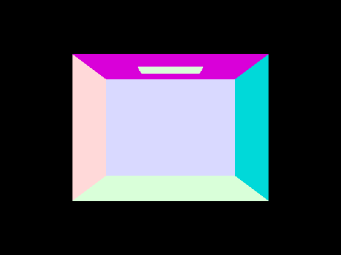
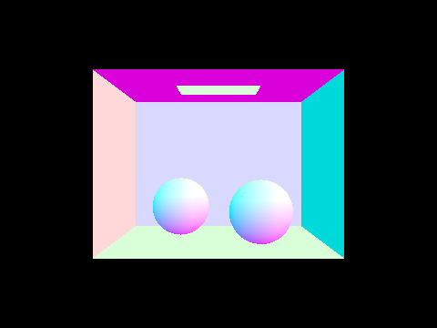
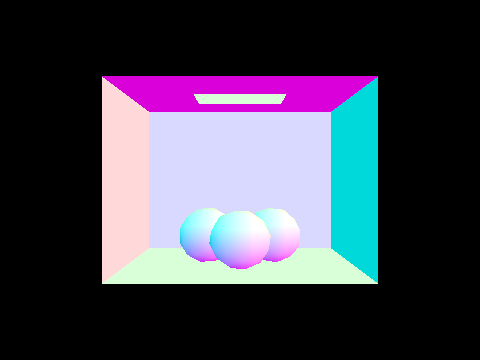
The diagnostic maps the surface normal n to RGB with 0.5*n+0.5. Tests cover triangle front and back faces, out-of-triangle barycentrics, parallel misses, sphere tangencies, interior exits, and finite ray segments.
Part 2: Bounding Volume Hierarchy
Each BVH node encloses a contiguous range of primitive pointers. The default splitter evaluates 12 centroid bins along each axis and minimizes leftArea*leftCount + rightArea*rightCount. Empty partitions are rejected. If no usable split exists, a median split along the longest centroid axis guarantees progress, including for coincident centroids. Leaves contain at most four primitives in the normal configuration.
The slab test intersects the ray interval with the valid interval for each box axis. A zero direction component is handled explicitly: a parallel ray outside the slab misses, while a ray within the slab continues through the remaining axes. The construction and traversal use stacks. Shadow traversal returns after any hit; closest-hit traversal visits nearer boxes first and benefits from the shortened max_t.
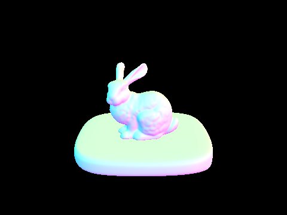
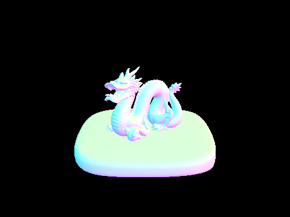
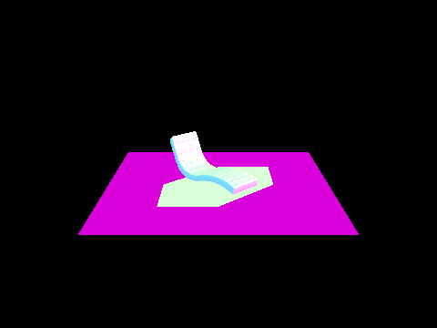
| Scene | Strategy | Build (s) | Render (s) | Tests/ray |
|---|---|---|---|---|
| CBbunny | SAH | 0.2399 | 0.0401 | 2.26 |
| CBbunny | MEDIAN | 0.1348 | 0.0404 | 2.56 |
| CBbunny | BRUTE | 0.0023 | 2.4945 | 9727.86 |
| bunny | SAH | 0.2637 | 0.0383 | 0.93 |
| bunny | MEDIAN | 0.1558 | 0.0394 | 1.66 |
| bunny | BRUTE | 0.0040 | 2.7633 | 11563.50 |
| bench | SAH | 0.6514 | 0.0357 | 0.63 |
| bench | MEDIAN | 0.3385 | 0.0384 | 0.88 |
| bench | BRUTE | 0.0070 | 3.5767 | 14636.80 |
Timing settings: 96x72 normal-shaded images, one center camera sample per pixel, 8 requested rendering threads, Release x64, and one run per setting. BRUTE keeps every primitive in one leaf; median and SAH use the same leaf limit. Build time is measured separately from render time. The low-resolution benchmark keeps the unaccelerated runs manageable; the displayed normal images are 480x360.
The BVH reduces primitive work by rejecting entire regions before testing their triangles. SAH generally tests fewer primitives than median splitting, but its bin search costs additional construction work. On short renders, setup and thread overhead can outweigh traversal savings, so the table does not imply that SAH is universally fastest. Earlier single-threaded geometry comparisons also produced pixel-identical SAH, median, and brute-force images.
Part 3: Direct Illumination - Two Estimators
The diffuse BRDF is reflectance/pi. At a surface, an orthonormal basis aligns the local z axis with the normal. The outgoing camera direction and incoming light direction are expressed in this local frame for BRDF evaluation. Zero-bounce radiance is the material emission, which lets the light itself appear in the image.
Uniform hemisphere sampling draws incoming directions with PDF 1/(2*pi). A secondary ray contributes only when its closest hit emits light. Each contribution is BRDF * emittedRadiance * cos(theta) * 2*pi, averaged over the sample count. Most sampled directions do not find the small light, so many contributions are zero.
Importance sampling requests directions directly from each light. A finite shadow ray ends just before the sampled light position; an occluder blocks the contribution. Otherwise BRDF * incidentRadiance * cos(theta) / PDF is accumulated. Delta lights need one sample; area lights use the requested count. An EPS_F lower bound prevents self-intersection.
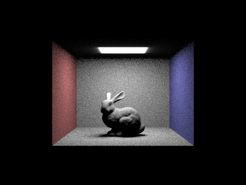
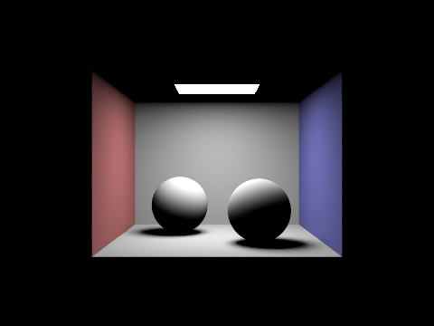
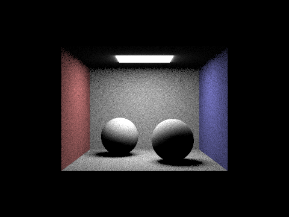
All four images use 64 camera samples per pixel, 16 samples per area light, and maximum depth 1. Light sampling produces smoother shadow and surface estimates because it deliberately samples illumination that can contribute. Uniform hemisphere sampling is valid for the area-light scene but wastes more samples. A difference in the light-edge glow is also possible because the two estimators treat the provided area-light directionality differently.
Part 3: Soft Shadows and Light Sample Count
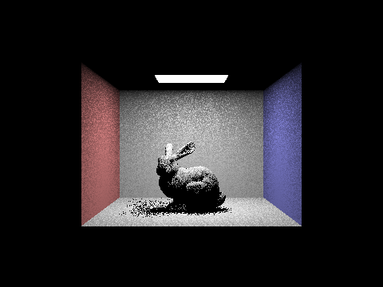
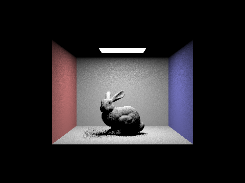
A soft shadow contains partially visible area-light configurations. With one light sample, a single visibility decision makes penumbra pixels noisy. Increasing the light sample count averages more positions across the emitter, making the shadow transition more stable. These images keep the camera rate at one sample per pixel, so additional light samples address illumination noise but do not provide comparable antialiasing at object silhouettes.
The direct estimator divides by the sample count rather than adding unnormalized contributions. Consequently, more light samples should change variance, not systematically brighten the scene.
Part 4: Global Illumination
At a diffuse hit, sample_f draws an incoming direction from a cosine-weighted hemisphere and returns its PDF, cos(theta)/pi. The recursive estimator multiplies incoming radiance by the BRDF, absolute cosine, and inverse PDF. For a Lambertian material, these factors reduce to the reflectance, which avoids the extra cosine variance of uniform direction sampling.
The camera ray starts with the configured depth budget. A hit contributes direct lighting and can spawn an indirect ray with one less remaining bounce. The first indirect bounce is always traced when the budget is greater than one. Later paths survive with probability 0.65; surviving contributions are divided by that probability. The depth cap still truncates longer paths, while roulette avoids always paying for long paths that contribute little.
Diffuse recursive hits omit their own emission because the direct estimator already counts light connections; this prevents counting the same direct-light path twice. Primary emission is added separately. Accumulated mode retains all terms up to the depth cap, while individual-bounce mode keeps only the requested order.
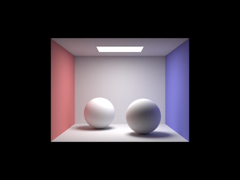
Both global views use 1,024 camera samples per pixel and 4 light samples. Indirect paths brighten regions that do not see the area light and transfer the red and blue wall colors onto neighboring surfaces.
Part 4: Direct and Indirect Contributions
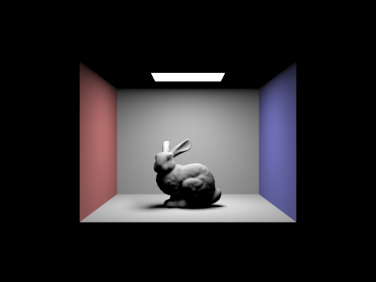
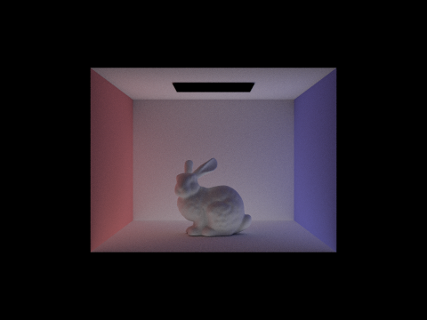
Both views average the same 1,024 camera samples, with 4 light samples per estimate. The direct image establishes the area-light visibility and the main cast shadow. The indirect image is weaker, but it contains reflected wall color, illumination on the bunny underside, and light reaching otherwise dark regions. Their linear-radiance components sum to the depth-5 global image. The displayed PNG values themselves cannot be added directly because the renderer applies a nonlinear display conversion.
Part 4: Individual Bounce Orders

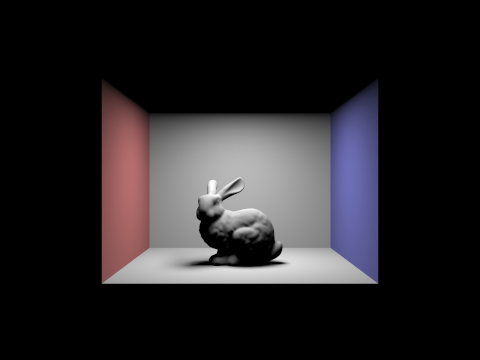
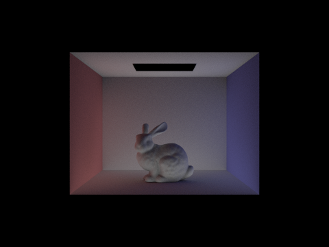
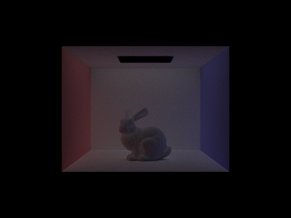
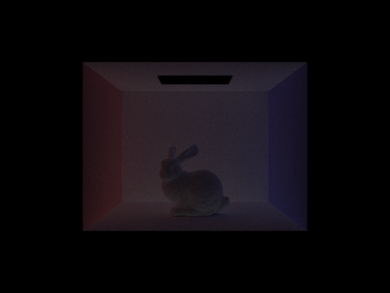
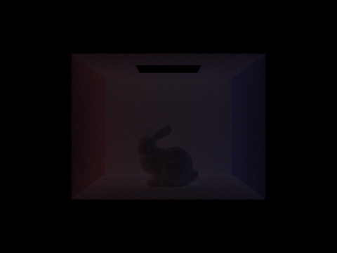
Order 0 shows only the visible emitter. Order 1 shows light reflected once from a surface toward the camera. Order 2 adds paths connecting two surfaces before reaching the light; it fills parts of the bunny and the floor shadow and carries the wall colors into the interior. Order 3 extends that exchange further and provides subtler, more distributed fill. Higher terms usually carry less energy because every diffuse reflection absorbs part of the incoming radiance.
Compared with a simple rasterized direct-light view, these higher-bounce terms explain why an occluded surface can still be illuminated and why nearby colored objects affect one another. They do not replace the first-bounce structure; they supply illumination that a direct-only calculation omits.
Part 4: Accumulated Bounce Orders
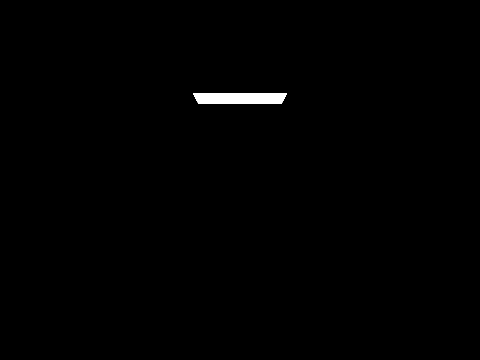
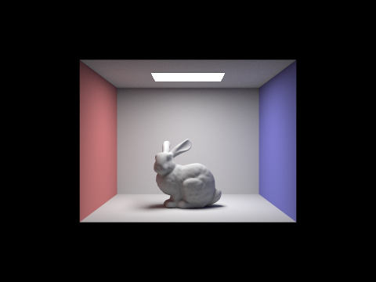
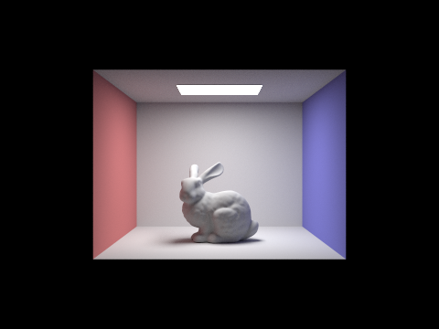

Accumulation progressively fills the image rather than isolating a single transport term. The largest visual change after direct lighting comes from the second bounce: the shadowed bunny and the box receive colored reflected light. The third and later terms add smaller corrections. Since these estimates share camera paths, changes between adjacent images are easier to attribute to the added transport order rather than unrelated sampling noise.
Part 4: Russian Roulette and Large Depth
All six images use 1,024 camera samples per pixel and 4 light samples. A larger cap allows longer light-transport paths, but roulette means most sampled paths finish well before depth 100. Dividing surviving indirect contributions by 0.65 preserves their expected value. The depth-100 image includes additional weak reflections; it does not imply that every camera sample traced 100 bounces.
For the bounce and sample-rate comparisons, an optional report-export mode traces roulette paths up to order 100 and records each contribution before display conversion. It averages orders 0-5 individually, their cumulative sums, the full depth-100 sum, and the depth-5 indirect sum. These are shared-path estimates of the same diffuse transport terms, not post-processing decompositions of an existing PNG.
Part 4: Camera Samples per Pixel
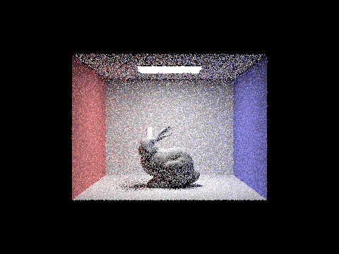
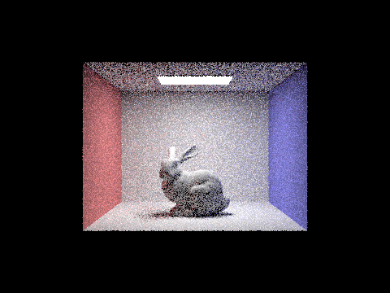
All images use accumulated bounces 0-5. Each view is a prefix average of the same camera-sample sequence, so the comparison changes the camera sample count while preserving the scene, camera, and light rate. Increasing samples reduces noisy surface and shadow estimates and improves the average of subpixel visibility at silhouettes. The gain has diminishing returns: Monte Carlo standard error typically decreases in proportion to 1/sqrt(N), so multiplying sample count by four is needed to approximately halve that error.
Part 5: Adaptive Sampling - Bunny
The adaptive estimator maintains a running mean and second central moment of sample luminance with Welford updates. After each batch of 32 samples, it computes the sample variance and the confidence half-width I=1.96*sqrt(variance/N). Sampling stops when I<=0.05*mean, or when the 2,048-sample cap is reached. The final color divides by the actual count, and that count is written to the sampling-rate buffer.
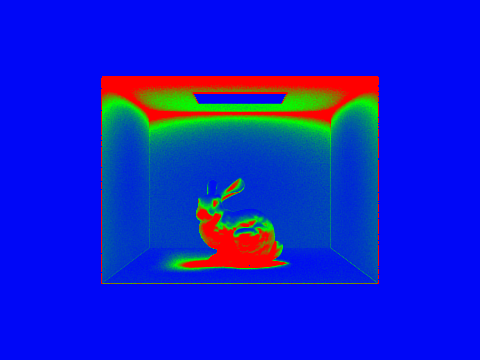
Settings: 480x360, maximum 2,048 camera samples per pixel, 1 light sample, maximum depth 5, batch size 32, and tolerance 0.05. Measured render time: 233.51 seconds. The sample cap is not the count used by every pixel.
Uniform black background regions converge early because their samples do not vary. Silhouettes, visibility transitions, and difficult indirect-light regions require more samples and move toward green, yellow, or red. The image still has finite-sample Monte Carlo error: a 95% confidence heuristic is a practical stopping rule, not a guarantee that every pixel has converged perfectly.
Part 5: Adaptive Sampling - Spheres
The adaptive estimator maintains a running mean and second central moment of sample luminance with Welford updates. After each batch of 32 samples, it computes the sample variance and the confidence half-width I=1.96*sqrt(variance/N). Sampling stops when I<=0.05*mean, or when the 2,048-sample cap is reached. The final color divides by the actual count, and that count is written to the sampling-rate buffer.
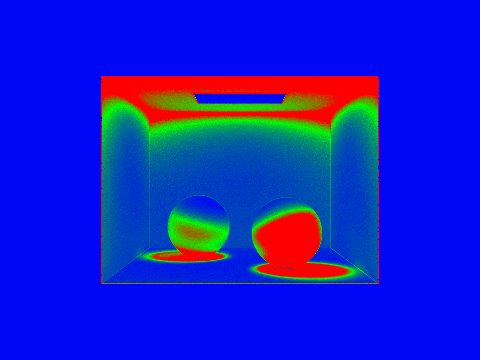
Settings: 480x360, maximum 2,048 camera samples per pixel, 1 light sample, maximum depth 5, batch size 32, and tolerance 0.05. Measured render time: 252.95 seconds. The sample cap is not the count used by every pixel.
Uniform black background regions converge early because their samples do not vary. Silhouettes, visibility transitions, and difficult indirect-light regions require more samples and move toward green, yellow, or red. The image still has finite-sample Monte Carlo error: a 95% confidence heuristic is a practical stopping rule, not a guarantee that every pixel has converged perfectly.
Part 6: Extra Credit
The implemented extensions are binned surface-area splitting, stack-based BVH construction and intersection, and jittered pixel sampling. No claim is made for the motion-blur, denoising, alternative-tree, GPU, or advanced transport suggestions.
The SAH search evaluates 12 bins on every nondegenerate centroid axis. For a fixed parent, minimizing area-weighted child counts approximates the expected primitive work after a ray enters the node. The Part 2 timing table compares this heuristic with median splits and brute force on three scenes. Fewer primitive tests can come at the price of more expensive construction, especially for a short render.
The stack-based builder stores a range and a pointer to the node slot for each pending task. It allocates a node, partitions the range, and pushes the two child tasks. Closest-hit traversal stores pending nodes, visits the nearer box first, and discards boxes beyond the shortened ray interval. Any-hit traversal stops as soon as a leaf primitive blocks a shadow ray. These paths passed the same randomized geometry tests. An isolated recursive baseline was not measured, so this report does not claim a speedup from removing recursion alone.
| Sampler | Display-space MSE |
|---|---|
| Random | 0.000688 |
| Jittered | 0.000563 |
Jittered sampling places one random location in each stratum of a 4x4 pixel grid. The comparison uses a fixed square sample count and disables adaptive stopping. Against the 1,024-spp direct-light reference, jittered sampling has lower display-space mean squared error in this run. The metric uses RGB values in nonblack reference pixels and is not a linear-radiance error estimate. Area-light sampling noise remains in both low-sample images, so this single pair does not establish a general variance reduction.
Validation and Reproducibility
The Release x64 build passed 4,116 regression checks. They include camera field of view, diffuse sample PDFs, parallel box rays, triangle hit and miss cases, sphere tangencies and interior exits, empty trees, identical-centroid termination, and 2,000 randomized BVH queries checked against brute force. The regression suite also passed with median splitting.
The report exporter was checked on a small scene before the final batch: the accumulated depth-5 export matched the main image exactly. All figures retain the renderer-generated PNGs at their original dimensions. Report images use 480x360 except the explicitly described low-resolution timing-only runs. Render settings, full commands, and measured times are saved in out/report-manifest.json.
Two setup issues were corrected during validation. Windowless output resolution is configured before scene loading so that a smaller image does not unintentionally crop the camera field of view. The random-number engine is thread-local, and diagnostic BVH counters are atomic, avoiding shared-state races between rendering workers. Report-image runs can disable the counters to reduce contention; the timing-table runs retain the counters.